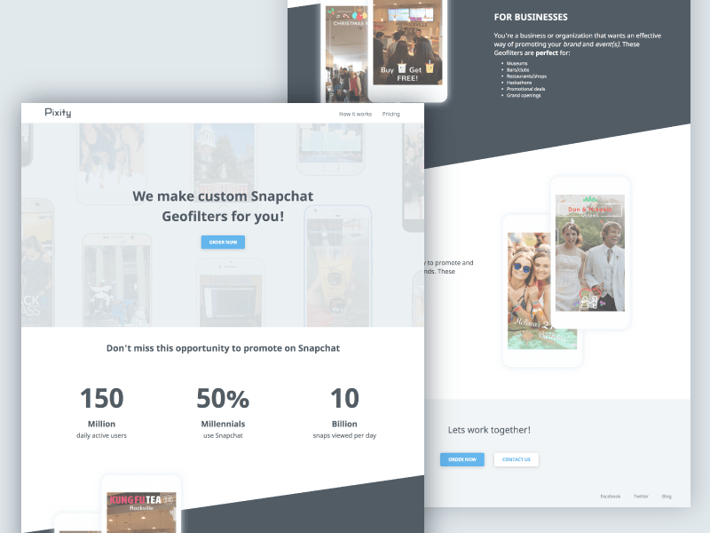
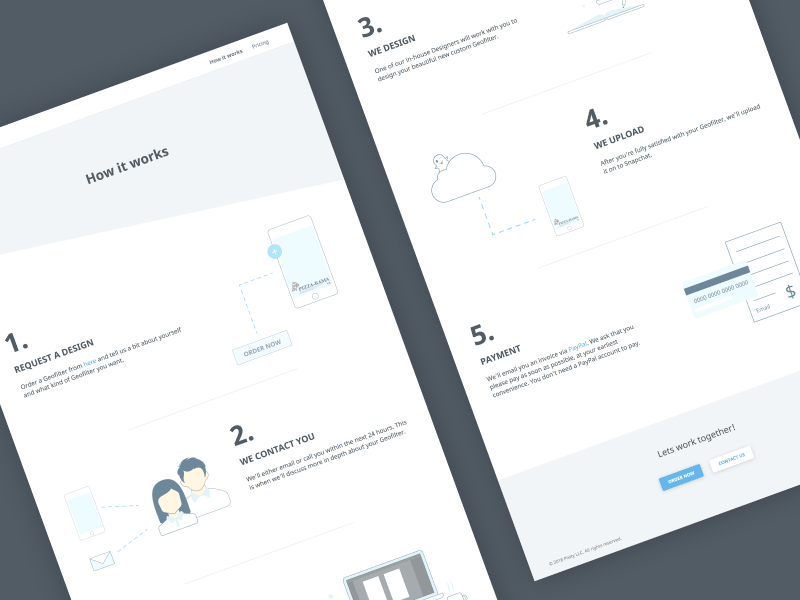

Snapchat Geofilters For All
We partnered with shops, museums, universities, and stores of all sizes.
A few of our clients
RESULTS
Increased 88.9% of our client's businesses by 11.45%.
Building Out Our Digital Presence
When we were just starting out, majority of our clients came from us cold emailing and cold calling. This became problematic as we scaled out our operations and clientele. We were getting a lot of repeat questions and giving a lot of repeat answers about our service. This took serious time away from actually designing. We needed one central location where potential clients could go to find more information about us and request designs.
So, I designed and developed our company website from scratch, as well as created custom illustrations to compliment our brand. This site served both potential and existing clients.
Company website - Homepage
Homepage design
Pixity.co is filled with Snapchat statistics and examples of our client work to show the credibility of our service.
Custom illustrations
How it works page design
Custom illustrations were created to bring the site to life and to make our brand more unique when compared to competitor studios. They were intentionally crafted to be visually soft with muted colors in order to be secondary to the words on the page.
Closing Remarks
Starting this studio allowed me to gain valuable experience with doing sales, building and maintaining client relations, and managing a small team of designers. I am very proud of the brand we have created, the impact that we've had on our clients, and the work that we've done. As a result, we increased 88.9% of our client's businesses by 11.45%.
Read about our values and how we created our brand here!